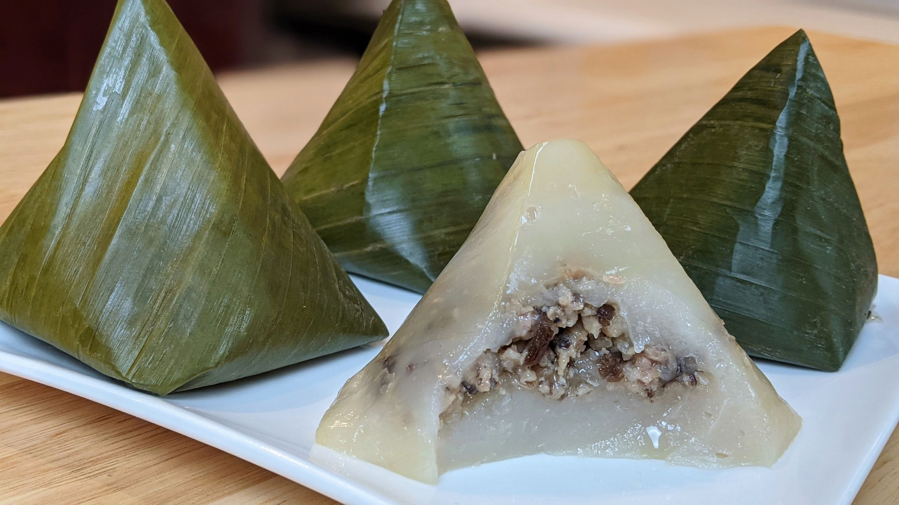

How to make Banh Gio

Description
Once a traditional Vietnamese Dish, banh gio had become popularized enough to be sold in convenient stores all over the country.
Surprisingly, something wrapped in banana leaves can be preserved for a long time and served as hearty convienent snacks
speaks clearly and confidently about its importance in the culinary minds of the Vietnamese people.
What you will need:
- Flour
- Water
- Salt, Sugar and Pepper
- Boiled Quail Eggs
- Minced Pork (30-50% fat)
- Wood Ear Mushrooms (preferrably dried)
- Banana Leaves
The steps:
- Soak the Wood Ear Mushrooms. If they're fresh, give them a wash
- Chop the Mushrooms into slices thin like noodles
- Mix the minced pork, salt, sugar, pepper, and the chopped mushrooms in a bowl
- Create soft dough using flour and water
- Use the pork mixture to make a meatball with a quail egg center. If they don't stick together, add some flour
- Cover the meatball with the dough
- Use the banana leafs to wrap up the dough in a Square Pyramid shape (see picture)
- Steam the cake
- Enjoy!